10th Grade Worksheets
2042 printable 10th Grade worksheets (PDF) with answer keys: reading comprehension passages, reading trails and math centers – no prep, print and go.
2,042 resources
Subject

Natale e inverno – Italian Reading BUNDLE | Christmas & Winter Schede

Art After 1945 BUNDLE | Art History Fact Sheets with Answer Keys

Modern Art Movements BUNDLE | Art History Fact Sheets with Answer Keys

19th-Century Art Movements BUNDLE | Art History Fact Sheets with Answer Keys

Romanesque to Biedermeier Art BUNDLE | Art History Fact Sheets with Answer Keys

Histoire de France – French Reading BUNDLE | Gaul to Versailles Fiches

Gli animali – Italian Reading Comprehension BUNDLE | Animal Schede

Antica Roma – Italian Reading Comprehension BUNDLE | Ancient Rome Schede

Les animaux – French Reading Comprehension BUNDLE | Animal Fiches

L'espace – French Reading Comprehension BUNDLE | Space & Astronomy Fiches

La francophonie – French Reading BUNDLE | French-Speaking World Fiches

Lo spazio – Italian Reading Comprehension BUNDLE | Space Schede

Corpo umano e salute – Italian Reading BUNDLE | Human Body Schede

Le corps humain – French Reading BUNDLE | Human Body & Health Fiches

Noël et l'hiver – French Reading BUNDLE | Christmas & Winter Fiches
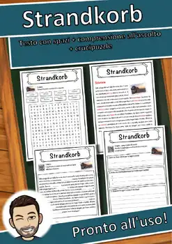
Strandkorb – Italian Reading Comprehension Worksheet (Scheda): Cloze & Listening

Storia – Italian Reading Comprehension Worksheet (Scheda): Cloze & Listening
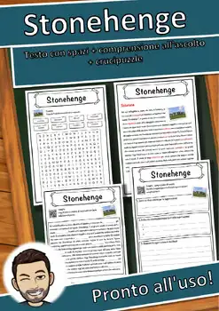
Stonehenge – Italian Reading Comprehension Worksheet (Scheda): Cloze & Listening
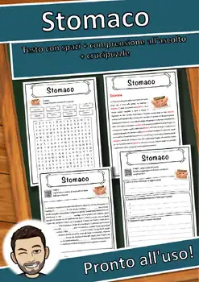
Stomaco – Italian Reading Comprehension Worksheet (Scheda): Cloze & Listening
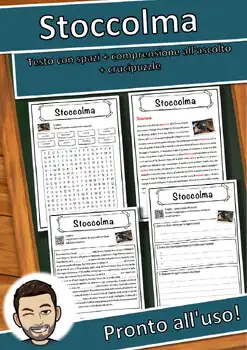
Stoccolma – Italian Reading Comprehension Worksheet (Scheda): Cloze & Listening
Stile – Italian Reading Comprehension Worksheet (Scheda): Cloze & Listening
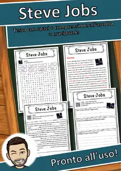
Steve Jobs – Italian Reading Comprehension Worksheet (Scheda): Cloze & Listening
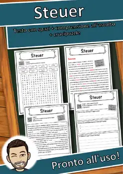
Steuer – Italian Reading Comprehension Worksheet (Scheda): Cloze & Listening
Stato – Italian Reading Comprehension Worksheet (Scheda): Cloze & Listening
Stampa 3D – Italian Reading Comprehension Worksheet (Scheda): Cloze & Listening
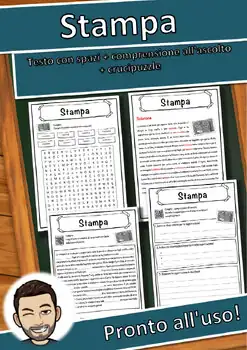
Stampa – Italian Reading Comprehension Worksheet (Scheda): Cloze & Listening

Stagno – Italian Reading Comprehension Worksheet (Scheda): Cloze & Listening
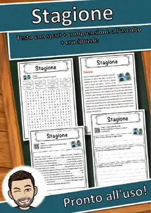
Stagione – Italian Reading Comprehension Worksheet (Scheda): Cloze & Listening
Sri Lanka – Italian Reading Comprehension Worksheet (Scheda): Cloze & Listening
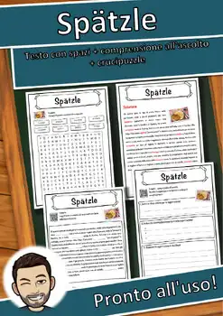
Spätzle – Italian Reading Comprehension Worksheet (Scheda): Cloze & Listening
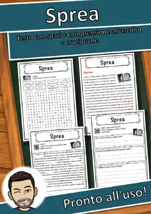
Sprea – Italian Reading Comprehension Worksheet (Scheda): Cloze & Listening
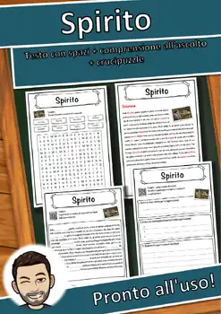
Spirito – Italian Reading Comprehension Worksheet (Scheda): Cloze & Listening
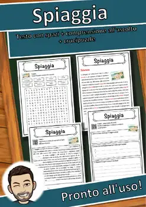
Spiaggia – Italian Reading Comprehension Worksheet (Scheda): Cloze & Listening
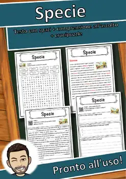
Specie – Italian Reading Comprehension Worksheet (Scheda): Cloze & Listening
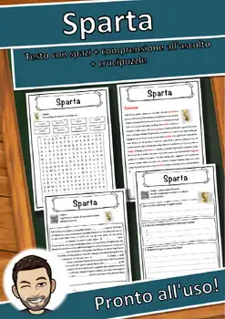
Sparta – Italian Reading Comprehension Worksheet (Scheda): Cloze & Listening
Spagna – Italian Reading Comprehension Worksheet (Scheda): Cloze & Listening
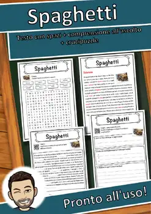
Spaghetti – Italian Reading Comprehension Worksheet (Scheda): Cloze & Listening

Spada – Italian Reading Comprehension Worksheet (Scheda): Cloze & Listening
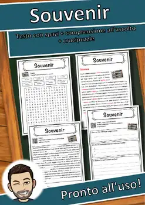
Souvenir – Italian Reading Comprehension Worksheet (Scheda): Cloze & Listening
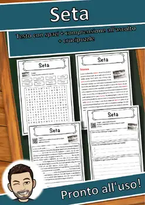
Seta – Italian Reading Comprehension Worksheet (Scheda): Cloze & Listening
Sorgente – Italian Reading Comprehension Worksheet (Scheda): Cloze & Listening
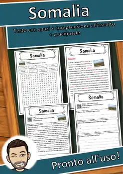
Somalia – Italian Reading Comprehension Worksheet (Scheda): Cloze & Listening
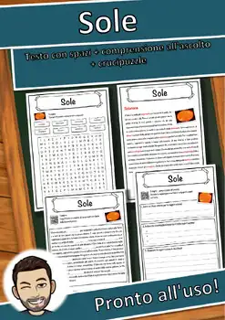
Sole – Italian Reading Comprehension Worksheet (Scheda): Cloze & Listening
Soldato – Italian Reading Comprehension Worksheet (Scheda): Cloze & Listening

Sokrates – Italian Reading Comprehension Worksheet (Scheda): Cloze & Listening

Sojabohne – Italian Reading Comprehension Worksheet (Scheda): Cloze & Listening

Software – Italian Reading Comprehension Worksheet (Scheda): Cloze & Listening

Sofia – Italian Reading Comprehension Worksheet (Scheda): Cloze & Listening
No resources found – try a different search term or filter.